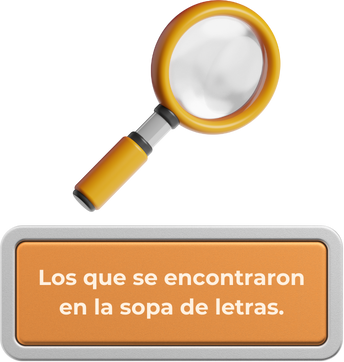
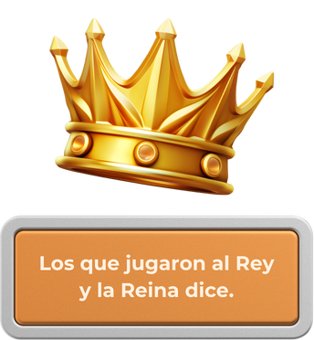
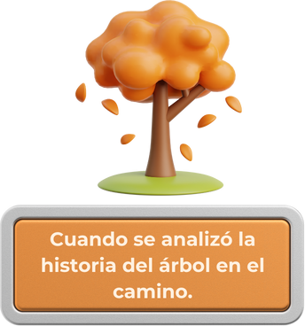

Pide que apaguen la velita, se sienten y escuchando el canto de San Francisco redacten una cartita-oración a Dios, en dónde cada uno escriba lo siguiente:
¿cómo cultivará el don de la Paz que ha recibido?
¿Qué hará en su casa, con sus papás, hermanos o hermanas, con sus abuelos, tíos o primos, con sus amigos y compañeros de escuela para cultivar relaciones de paz, de armonía y de misericordia?
Después, se leen todos los carteles con todas las actividades que hemos ido realizando sobre “los dones”.
- 
- 
- 
Una vez que terminen de escribir su cartita-oración a Dios, siguiendo en un ambiente de recogimiento, de forma organizada invitar a que las niñas, niños o adolescentes busquen a un compañero amigo y lean su carta dirigida a Dios, dando oportunidad a escuchar también la de su amigo o compañero.